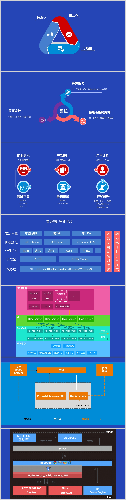
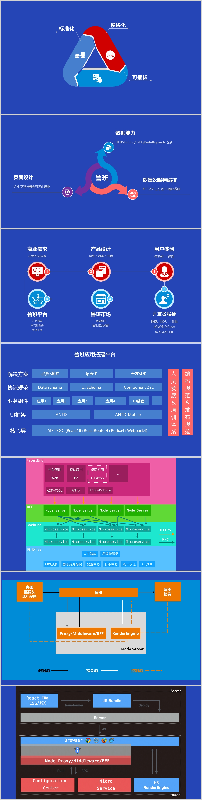

鲁班
鲁班基于多年技术积累沉淀，传承精雕细琢的工匠精神，推出GUI搭建平台（鲁班）。
方案概述
鲁班提供的Web GUI开发的基础套件。主要提供鲁班市场、应用页面、可视化设计器、调用Dubbo和执行Bash的能力，另外还包括相应的一些基础服务。鲁班底层依赖React和Antd、Antd-Mobile，可以运行在主流浏览器。
鲁班方案

鲁班基于多年技术积累沉淀，传承精雕细琢的工匠精神，推出GUI搭建平台（鲁班）。
鲁班提供的Web GUI开发的基础套件。主要提供鲁班市场、应用页面、可视化设计器、调用Dubbo和执行Bash的能力，另外还包括相应的一些基础服务。鲁班底层依赖React和Antd、Antd-Mobile，可以运行在主流浏览器。
